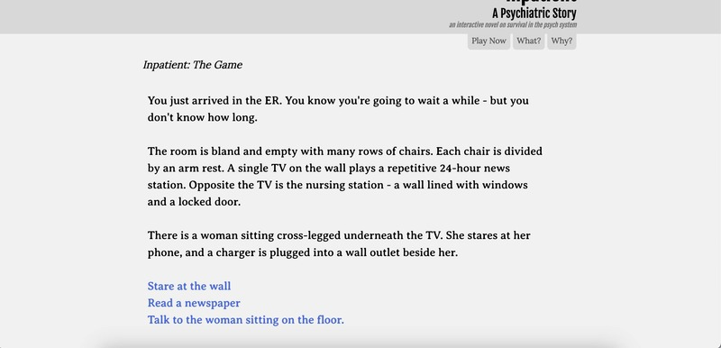

The Depression Quest is an interactive story game that allows the user to see through the lens of an individual who is dealing with depression. It uses a choose-your-own adventure technique that allows users to click through different decisions to see followed scenarios. The interface is a bit lengthy in words but I appreciate the images and visual hierarchy to highlight the most important factors that may contribute to depression. The game is also really long and can cause boredom for players.
Inpatient A Psychiatric Story The Inpatient Game is in the perspective of a woman who is admitted to the hospital with a mental health crisis following the loss of her pet. The storytelling game is similar to Depression Quest in which it allows the user to click through different choices to reveal what happens next. The concept is helpful in allowing users to see the treatment of a patient within a psychiatric hospital, but the interface is lacking visually. There are no images or colors to keep the user's attention. The long paragraphs may overwhelm users with focusing on just plain text throughout the game.